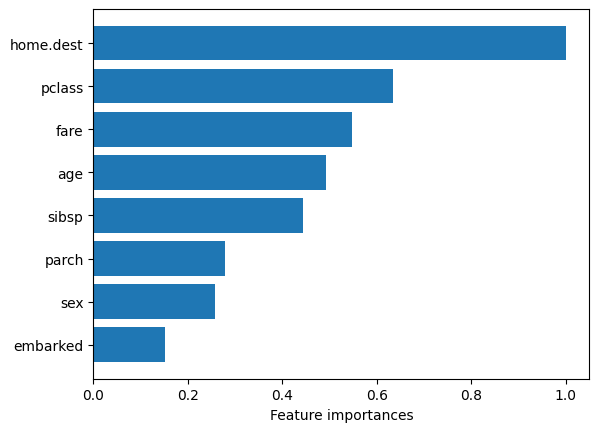

Titanic data set example
Note: The focus of this example is less on finding anomalies but rather to illustrate model explanability in the case of categorical and continuous features.
[1]:
import numpy as np
from sklearn.datasets import fetch_openml
from bhad.model import BHAD
[2]:
X, y = fetch_openml("titanic", version=1, as_frame=True, return_X_y=True)
X.head(2)
[2]:
| pclass | name | sex | age | sibsp | parch | ticket | fare | cabin | embarked | boat | body | home.dest | |
|---|---|---|---|---|---|---|---|---|---|---|---|---|---|
| 0 | 1 | Allen, Miss. Elisabeth Walton | female | 29.0000 | 0 | 0 | 24160 | 211.3375 | B5 | S | 2 | NaN | St Louis, MO |
| 1 | 1 | Allison, Master. Hudson Trevor | male | 0.9167 | 1 | 2 | 113781 | 151.5500 | C22 C26 | S | 11 | NaN | Montreal, PQ / Chesterville, ON |
[3]:
X_cleaned = X.drop(['body', 'cabin', 'name', 'ticket', 'boat'], axis=1).dropna() # not needed
y_cleaned = y[X_cleaned.index]
X_cleaned.info(verbose=True)
<class 'pandas.core.frame.DataFrame'>
Index: 684 entries, 0 to 1281
Data columns (total 8 columns):
# Column Non-Null Count Dtype
--- ------ -------------- -----
0 pclass 684 non-null int64
1 sex 684 non-null category
2 age 684 non-null float64
3 sibsp 684 non-null int64
4 parch 684 non-null int64
5 fare 684 non-null float64
6 embarked 684 non-null category
7 home.dest 684 non-null object
dtypes: category(2), float64(2), int64(3), object(1)
memory usage: 39.0+ KB
Partition dataset:
[4]:
from sklearn.model_selection import train_test_split
X_train, X_test, y_train, y_test = train_test_split(X_cleaned, y_cleaned, test_size=0.33, random_state=42)
print(X_train.shape)
print(X_test.shape)
print(np.unique(y_train, return_counts=True))
print(np.unique(y_test, return_counts=True))
(458, 8)
(226, 8)
(array(['0', '1'], dtype=object), array([242, 216]))
(array(['0', '1'], dtype=object), array([122, 104]))
Train model and create local/global model explanation:
Retrieve local model explanations. Here: Specify all numeric and categorical columns explicitly
[5]:
num_cols = list(X_train.select_dtypes(include=['float', 'int']).columns)
cat_cols = list(X_train.select_dtypes(include=['object', 'category']).columns)
Score your train set:
[6]:
model = BHAD(
contamination=0.01,
num_features=num_cols,
cat_features=cat_cols,
nbins=None,
verbose=False
)
y_pred_train_new = model.fit_predict(X_train)
scores_train_new = model.decision_function(X_train)
print("Training predictions:", np.unique(y_pred_train_new, return_counts=True))
Training predictions: (array([-1, 1]), array([ 5, 453]))
[7]:
from bhad import explainer
local_expl = explainer.Explainer(bhad_obj=model, discretize_obj=model._discretizer).fit()
--- BHAD Model Explainer ---
Using fitted BHAD and discretizer.
Marginal distributions estimated using train set of shape (458, 8)
[8]:
df_train = local_expl.get_explanation(nof_feat_expl = 5)
Create local explanations for 458 observations.
[9]:
global_feat_imp = local_expl.global_feat_imp # based on X_train
global_feat_imp
[9]:
| avg ranks | |
|---|---|
| embarked | 0.152058 |
| sex | 0.257304 |
| parch | 0.279548 |
| sibsp | 0.444223 |
| age | 0.491700 |
| fare | 0.546813 |
| pclass | 0.634462 |
| home.dest | 1.000000 |
Get global model explanation (in decreasing order):
[10]:
from matplotlib import pyplot as plt
plt.barh(global_feat_imp.index, global_feat_imp.values.flatten())
plt.xlabel("Feature importances");

Get local explanations, i.e. feature importances (in decreasing order):
[11]:
for obs, ex in enumerate(df_train.explanation.values):
if (obs % 100) == 0:
print(f'\nObs. {obs}:\n', ex)
Obs. 0:
parch (Cumul.perc.: 0.996): 5.0
home.dest (Perc.: 0.011): Sweden Winnipeg, MN
sex (Perc.: 0.4): female
Obs. 100:
home.dest (Perc.: 0.002): Tofta, Sweden Joliet, IL
fare (Cumul.perc.: 0.07): 7.78
Obs. 200:
home.dest (Perc.: 0.013): Brooklyn, NY
Obs. 300:
home.dest (Perc.: 0.007): Bournmouth, England
age (Cumul.perc.: 0.05): 5.0
sex (Perc.: 0.4): female
Obs. 400:
home.dest (Perc.: 0.002): Taalintehdas, Finland Hoboken, NJ
[12]:
y_pred_test = model.predict(X_test)
[13]:
df_test = local_expl.get_explanation(nof_feat_expl = 4)
df_test.head(2)
Create local explanations for 226 observations.
[13]:
| pclass | sex | age | sibsp | parch | fare | embarked | home.dest | explanation | |
|---|---|---|---|---|---|---|---|---|---|
| 0 | 2.0 | male | 36.0 | 1.0 | 2.0 | 27.7500 | S | Bournmouth, England | home.dest (Perc.: 0.007): Bournmouth, England |
| 1 | 1.0 | male | 49.0 | 1.0 | 1.0 | 110.8833 | C | Haverford, PA | home.dest (Perc.: 0.007): Haverford, PA\nfare ... |
[14]:
for obs, ex in enumerate(df_test.explanation.values):
if (obs % 50) == 0:
print(f'\nObs. {obs}:\n', ex)
Obs. 0:
home.dest (Perc.: 0.007): Bournmouth, England
Obs. 50:
home.dest (Perc.: 0.002): Deephaven, MN / Cedar Rapids, IA
fare (Cumul.perc.: 0.91): 106.42
Obs. 100:
home.dest (Perc.: 0.002): Hudson, NY
sex (Perc.: 0.4): female
Obs. 150:
home.dest (Perc.: 0.0): ?Havana, Cuba
Obs. 200:
embarked (Perc.: 0.048): Q
home.dest (Perc.: 0.0): Co Sligo, Ireland Hartford, CT
sex (Perc.: 0.4): female
fare (Cumul.perc.: 0.061): 7.75
[15]:
local_expl.global_feat_imp # based on X_test
[15]:
| avg ranks | |
|---|---|
| embarked | 0.157711 |
| parch | 0.245639 |
| sex | 0.256804 |
| sibsp | 0.441731 |
| age | 0.480112 |
| fare | 0.575715 |
| pclass | 0.638521 |
| home.dest | 1.000000 |